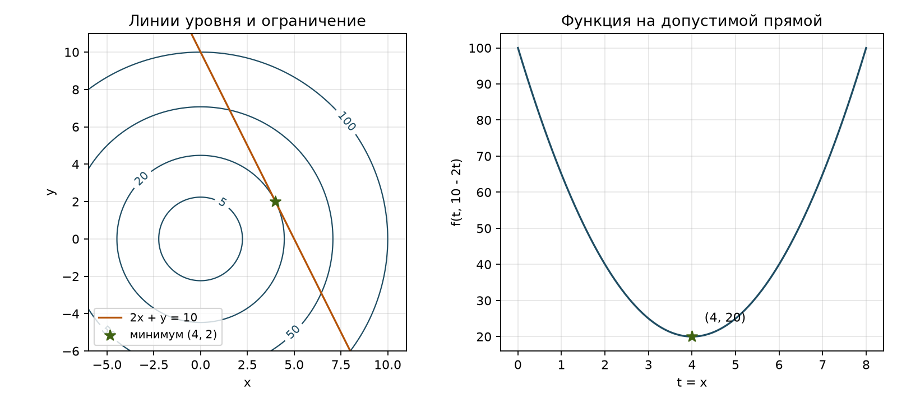

| ФИО: | Конанчук Иван Алексеевич |
| Поток: | 1.1 |
| Вариант: | 12 (номер в потоке 12, остаток от деления на 12 равен 0) |
| Код: | github.com/chikirao/met_opt, папка L3 |
Найти минимум функции при заданном ограничении методом множителей Лагранжа. Проверить найденную точку, доказать, что минимум достигается именно в ней, и сравнить ручное решение с программной проверкой.
Для варианта 12 нужно найти минимум функции при ограничении-равенстве:
Переменные x и y принимают любые действительные значения. Также нужно выяснить, существует ли максимум.
Переношу ограничение в левую часть: . Строю функцию L = f + λh со знаком плюс. Здесь λ является дополнительной неизвестной. Приравниваю производные L по x и y к нулю и добавляю ограничение. Получаю три уравнения для x, y и λ. Их решения пока являются только кандидатами: нужно отдельно проверить, есть ли в них минимум или максимум.
Работать можно только с точками прямой 2x + y = 10. Такие точки существуют: например, (0, 10), поскольку 2·0 + 10 - 10 = 0. У f и h есть непрерывные производные. Градиент h, то есть пара её частных производных, равен ∇h = (2, 1) и нигде не равен нулю. Это проверка регулярности: для одного ограничения выполнено условие применимости метода Лагранжа.
Дифференцирую по всем трём неизвестным. Производная по λ возвращает ограничение:
Из первого уравнения 2x + 2λ = 0 получаю x = -λ. Из второго 2y + λ = 0 получаю y = -λ/2. Подставляю их в ограничение:
2·(-λ) + (-λ/2) = 10.
Тогда x = -(-4) = 4, y = -(-4)/2 = 2. При решении я делил только на числа 2 и 5, которые не равны нулю, поэтому решения при делении не потерялись. Для λ получилось одно значение, а x и y однозначно выражены через него. Значит, других решений нет.
Ограничение: 2·4 + 2 - 10 = 0. Условия стационарности: 2·4 + 2·(-4) = 0 и 2·2 + (-4) = 0. Значение цели:
Кандидат допустим. Самой подстановки недостаточно для вывода о минимуме, поэтому исследую функцию на всей прямой.
Из ограничения y = 10 - 2x. Полагаю x = t, y = 10 - 2t, где t принимает любые действительные значения. Так можно записать любую точку прямой и получить функцию одной переменной:
Квадрат неотрицателен при любом t. Поэтому φ(t) ≥ 20, причём равенство возможно только при t = 4. Значит, в точке (4, 2) значение равно 20, а в любой другой точке прямой оно больше 20. Поэтому минимум глобальный и единственный. Проверка производными даёт φ′(t) = 10t - 40 и φ″(t) = 10 > 0, то есть кандидат также является строгим локальным минимумом.
При t → +∞ и t → -∞ значение φ(t) → +∞. Значит, на допустимой прямой функция не ограничена сверху и глобального максимума нет. Локальных максимумов тоже нет: у φ единственная стационарная точка, и в ней достигается минимум.
Цель f = x² + y² является квадратом расстояния до начала координат. Поэтому требуется найти ближайшую к началу координат точку прямой 2x + y = 10. Линии уровня цели являются окружностями с центром (0, 0). Наименьшая окружность, имеющая общую точку с прямой, касается её в (4, 2), её радиус равен √20.

В точке (4, 2) градиент цели ∇f = (8, 4) сонаправлен с ∇h = (2, 1). Первый вектор в четыре раза больше второго. Условие Лагранжа выполняется: ∇f + λ∇h = (8, 4) + (-4)·(2, 1) = (0, 0). Градиенты перпендикулярны соответствующим линиям уровня. В точке касания у окружности и прямой одна и та же нормаль, поэтому градиенты параллельны.
Чтобы интерпретировать λ, заменяю правую часть ограничения 10 на параметр b: 2x + y = b. Та же система даёт x*(b) = 2b/5, y*(b) = b/5 и λ*(b) = -2b/5.
V(b) обозначает минимальное значение функции при правой части b. Производная V′(b) = 2b/5 показывает, как быстро меняется этот минимум при изменении b. При b = 10 она равна 4, то есть -λ*. Если немного увеличить правую часть на Δb, минимум увеличится приблизительно на 4Δb. Здесь λ описывает чувствительность ответа к изменению ограничения. Знак минус в V′(b) = -λ*(b) получается из выбранной записи L = f + λ(2x + y - b). Для ограничения-равенства λ может быть отрицательным.
Проверку выполнил на Python с SymPy 1.14.0. В lagrange.py
функция solve строит L, вычисляет производные, решает систему через
sympy.solve и проверяет действительные корни подстановкой.
В main.py заданы исходные f и h. Ответ вычисляется из системы.
Ключевой фрагмент расчёта (полные исходники приложены):
x, y = sp.symbols("x y", real=True)
lam = sp.Symbol("lam", real=True)
f = x**2 + y**2
constraints = [2*x + y - 10]
L = f + lam*constraints[0]
equations = [sp.diff(L, v) for v in (x, y, lam)]
roots = sp.solve(equations, (x, y, lam), dict=True)
for root in roots:
print(root)
print("h =", sp.simplify(constraints[0].subs(root)))
print("f =", sp.simplify(f.subs(root)))
Запуск: python -m pip install -r requirements.txt,
затем python main.py из папки L3. Часть фактического вывода:
Действительных кандидатов: 1 Кандидат 1: x = 4 y = 2 lam = -4 f = 20 невязки ограничений: [0] невязки стационарности: [0, 0] ранг Якобиана в точке: 1
Невязка получается подстановкой найденного решения в левую часть уравнения,
записанного с нулём справа. Все невязки равны нулю: уравнения выполняются точно,
без округлений.
Полный вывод сохранён в output.txt. Программа также строит функцию
на прямой, вычисляет её производные и пределы при t → ±∞.
| Способ | x | y | λ | f | h | (∂L/∂x, ∂L/∂y) |
|---|---|---|---|---|---|---|
| Вручную | 4 | 2 | -4 | 20 | 0 | (0, 0) |
| SymPy | 4 | 2 | -4 | 20 | 0 | (0, 0) |
Методом множителей Лагранжа я получил x = 4, y = 2 и λ = -4. Проверил, что эта точка лежит на прямой 2x + y = 10. После подстановки y = 10 - 2x получилось f = 5(x - 4)² + 20: меньше 20 функция на прямой быть не может, а сверху её значения не ограничены. Поэтому найден единственный глобальный минимум 20, максимума нет. Расчёт в SymPy дал те же значения. Решение системы Лагранжа помогло найти точку, а выделение квадрата доказало, что в ней действительно минимум.